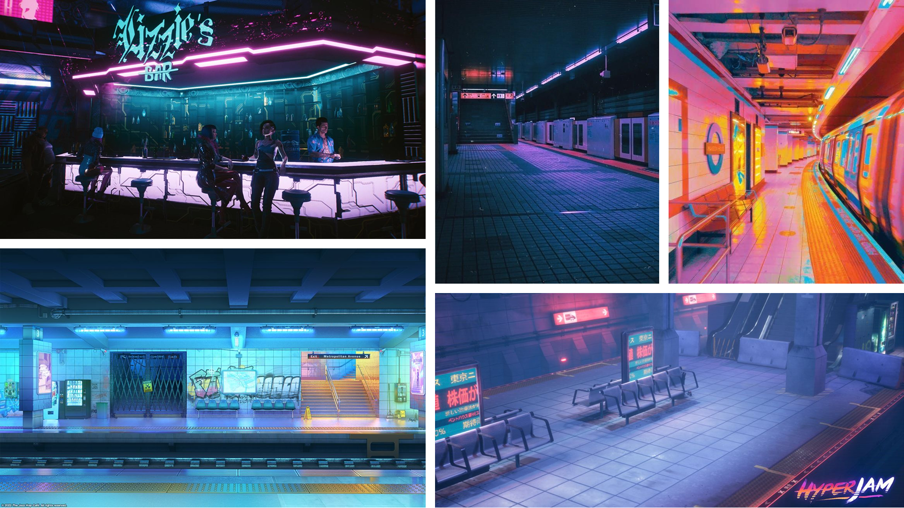
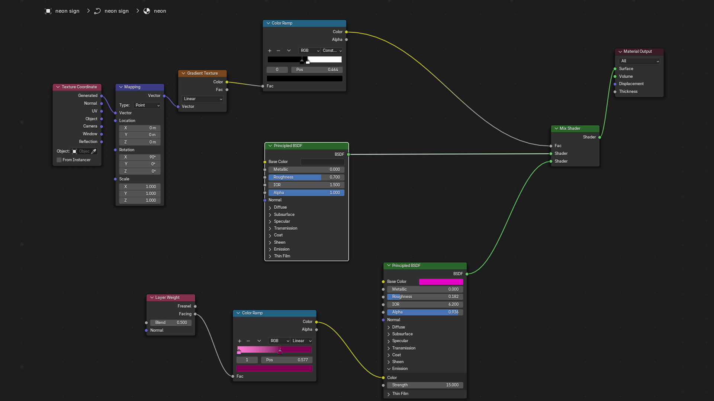

The Subway
This was a personal project undertaken to explore a retrofuturistic, Cyberpunk-inspired environment. I worked independently over the course of one week to create a stylized train station scene in Blender. The goal was to build a scene that used procedural materials, custom shaders, and efficient modeling techniques to developing my personal style and create something cool.
I undertook all aspects of the project independently, researching inspiration, modeling, texturing, lighting, and rendering it on my own. I researched shader techniques and procedural workflows to achieve realistic textures and atmosphere.
In creating this project, I wanted to create a visually compelling train station that balanced aesthetic detail with efficient modeling for rendering performance. I wanted to explore creating multiple key objects without relying on tutorials, ensuring each object fit into the environment.

Setting the Scene: I started out by blocking in my environment, using a human model from BlenderKit for scale. Excited to jump in to the neon aesthetic, BlenderGuru's neon sign tutorial provided help creating a neon shop sign, equipped with a custom shader to give it a glowing appearance whilst "dipping" the back half of the sign in a matte black as you would see in a real neon sign.


Modeling & Texturing: Created procedural materials and custom shaders. Iterated on UV unwrapping and modifier usage to keep polygon counts low. Modified BlenderKit assets to fit the style (vending machines, furniture), adjusting UVs, textures, and emission lighting.
Worn down look: Adding dirt and unevenness brought the scene to life. Almost every material has a brown mixed into it with its opacity driven by a noise pattern. This really sells the worn down look of the subway, and was really fun to experiment with. For areas such as the baseboards, I painted on the texture in high-wear areas.
Lighting & Environment: Built lighting to highlight materials, including layered textures like dirt on surfaces to add realism. Added environmental details such as wet concrete floors, using noise textures and the roughness slider to simulate puddles.
The final scene features a cohesive retrofuturistic station with realistic textures, and atmospheric lighting. Success was measured visually: the scene conveyed the intended mood and style, with objects appearing integrated and polished. Iterations improved realism while maintaining render efficiency.
I'm particularly happy with the results of the wet concrete floor, created with a concrete texture combined with a noise-driven roughness and displacement to simulate puddles, as well as the train, which I textured from photos and UV-mapped creatively with minimal reference images.
This project deepened my understanding of procedural texturing, shader customization, and efficient modeling. I learned how to balance aesthetic goals with technical constraints, and how small iterative changes (like adding dirt mix shaders or adjusting UVs) can significantly improve realism. For future projects, I’d like to learn more about techniques to reduce visual noise in low-light renders and further optimizing scene lighting for both realism and render performance. Additionally, I'd like to utilise the more "proper" UV unwrapping techniques I have learned since.